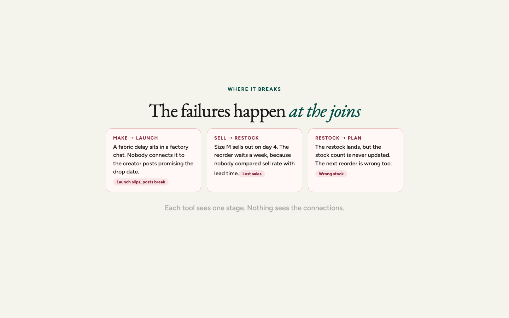
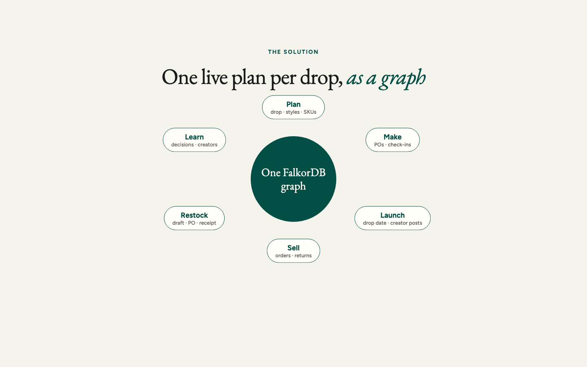
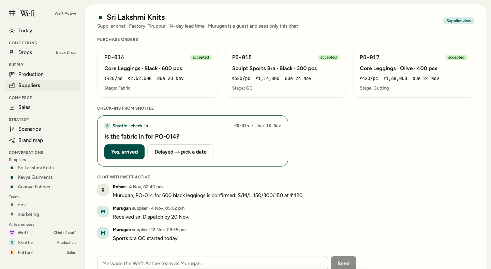
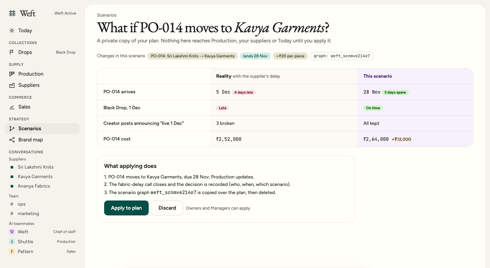
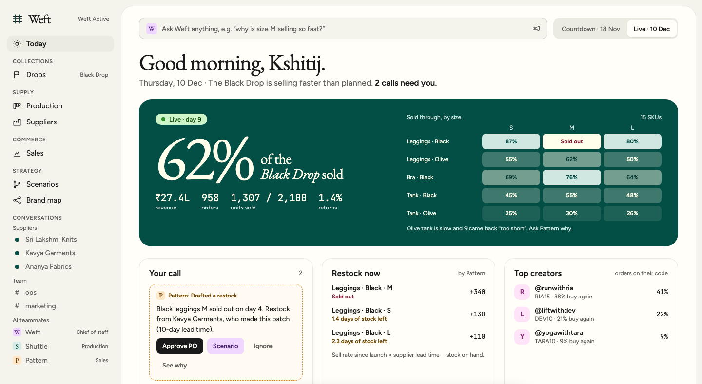
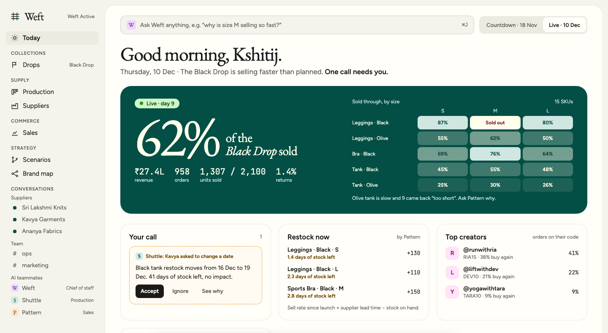
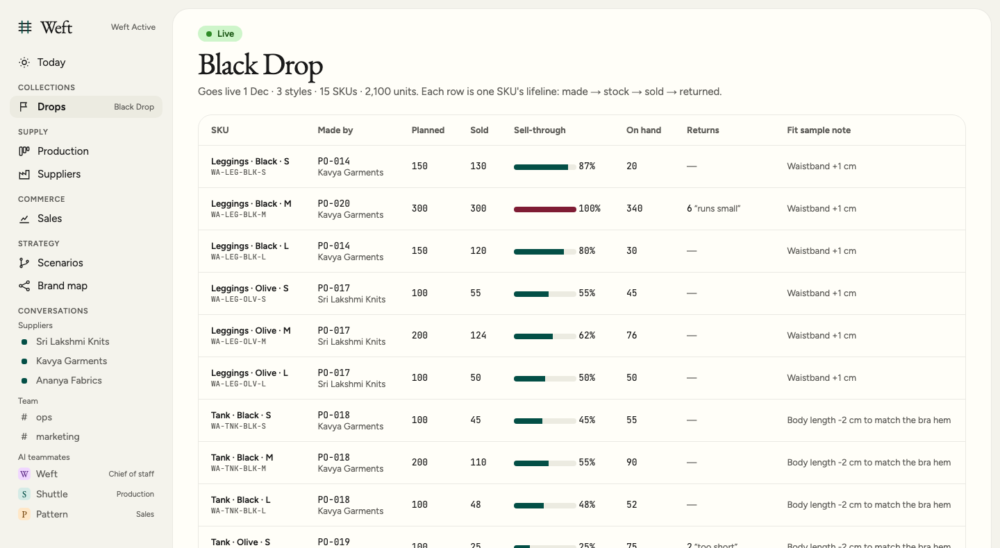
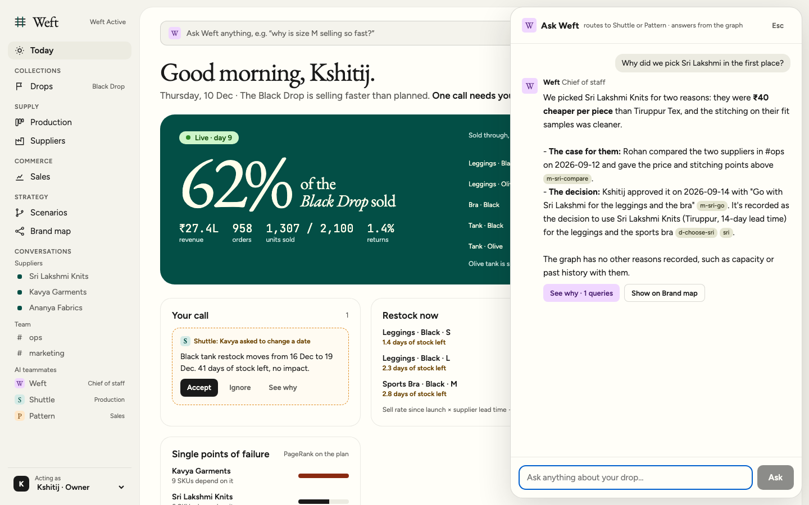

One live plan, from planning to restock
A D2C product is planned, made, sold and restocked, and each stage lives in a different tool. Weft keeps one live plan per product on a FalkorDB graph, from the first sample to the next reorder, with AI teammates that chase the updates and show what every change breaks.
founder@blackdrop.in / blackdrop; a guided tour walks through every feature below and names the FalkorDB feature behind each one.The problem
Thirteen days before our Black Drop goes live, a message arrives in a WhatsApp group: the fabric for the leggings is late. It sits between a dozen other messages. Three creators have already scheduled posts that say the drop goes live on 1 December. Nothing we use connects the two.
That is the first failure. The second comes after launch. The black leggings in size M sell out on day four, and the reorder waits a week, because nobody compared sell-through with the supplier's lead time. The third is quieter. When the restock arrives, the stock count is still wrong, so the next reorder is wrong too.
A D2C product is planned, made, sold and restocked. Each stage has its own tool, and the founder carries information between them. Every tool sees one stage. The problems that matter sit at the joins, and they stay invisible until a customer or a creator notices.

The loop
Weft follows one product through six stages. Each stage reads and writes the same graph, so a change in one stage shows up in the others.
| Stage | Today | With Weft | Status |
|---|---|---|---|
| Plan | Styles, SKUs and units in a spreadsheet | Drop, styles, SKUs and samples as connected nodes | Seeded. Creating in the app is next |
| Make | POs and delays in chat and Excel | Check-ins, delay calls with their impact, scenarios | Built |
| Launch | Creator post dates in a calendar | The drop date on the same graph as every post and PO that depends on it | Built |
| Sell | One Shopify dashboard per question | Orders, refunds and returns written onto SKU and creator nodes | Built. Demo uses seeded orders |
| Restock | Judgement, or a late reorder | A restock drafted from sell-through and lead time, a PO on approval, stock up on receipt | Built |
| Learn | Decisions kept in memory | Decisions recorded with their source; creators ranked by orders and repeat rate | Partly built |

The case study: the Black Drop
The case study is a premium fitness-wear brand in India and its first collection. Three styles (Core Leggings, Sculpt Sports Bra, Everyday Tank) make fifteen SKUs in black and olive, sizes S, M and L, for 2,100 units. Sri Lakshmi Knits in Tiruppur makes the leggings and the bra on a 14-day lead time. Kavya Garments in Bengaluru makes the tanks on 10 days. Three creators, each with a discount code, post on 25 November.
The demo runs in two states of the same plan: Countdown on 18 November, before launch, and Live on 10 December, day nine.
Walkthrough
1 · Plan
Today opens thirteen days before the drop. Production, samples, creators and suppliers are one plan, and every PO status comes from the graph, not from a list someone maintains.
2 · Make: a delay becomes a call
The supplier's view shows Murugan at Sri Lakshmi only his own POs and check-ins. Shuttle, the production teammate, asks before a date is due: is the fabric in for PO-014? Murugan answers in one tap, either Yes, arrived or Delayed with a new date.

That answer is a fact on the graph, and it raises a delay call. Weft walks the impact in one query: from the PO, through its SKUs and style, to the drop, and back in through every creator post that promises the drop date.
MATCH (po:PO {id:$po})-[:MADE_BY]->(sup:Supplier), (owner:Person)-[:OWNS]->(po),
(po)-[:SUPPLIES]->(k:SKU)-[:OF_STYLE]->(s:Style)-[:IN_DROP]->(d:Drop)
OPTIONAL MATCH (cr:Creator)-[:POSTED]->(p:CreatorPost)-[:PROMOTES]->(d)
RETURN po.id AS po, sup.name AS supplier, collect(DISTINCT k.code) AS skus, s.name AS style,
d.name AS drop, d.date AS dropDate, owner.name AS owner,
collect(DISTINCT {handle: cr.handle, date: p.date}) AS postsIn the demo, the fabric lands four days late, on 5 December. Three creator posts announcing 1 December would break.
3 · Scenario: test the change before making it
A scenario is a private copy of the whole plan, made with GRAPH.COPY. We change the copy and compare it with reality. Here the change is moving PO-014 to Kavya Garments, whose 10-day lead time lands the order before launch.

Apply to plan copies the scenario over the plan, records the decision with who made it and when, and deletes the scenario graph.
4 · Sell: day nine of the drop
Switch the clock to Live. Sixty-two percent of the 2,100 units have sold, 1,307 in all. The sell-through heatmap shows black leggings in size M sold out on day four. Revenue, returns and creator ranking come from the same graph.

5 · Restock to receipt: the loop closes
This is the step most tools miss. Pattern, the sales teammate, drafts the restock from three inputs: sell rate, supplier lead time and stock on hand.
daysLive = max(1, days from drop date to today)
rate = sold / daysLive
qty = ceil to 10 of max(0, rate × leadDays − onHand − incoming)
shown = qty > 0 and days of stock left (onHand / rate) < 7incoming is the quantity on POs that have not been received. Earlier the formula ignored open POs, so an approved restock still looked needed. Now an approved restock covers its SKU, and it drops off Restock now.

Approving the call writes a new PO with a unique id, priced from that SKU's last PO, and notifies the supplier when email or WhatsApp is configured. When the goods arrive, Mark received adds the PO's quantity to stock, split evenly across the SKUs the PO supplies. The black leggings in size M go from 0 on hand to 340.
MATCH (po:PO {id:$id})-[:SUPPLIES]->(k:SKU)
WITH po, collect(k) AS ks
UNWIND ks AS k
SET k.onHand = coalesce(k.onHand, 0) + toInteger(round(toFloat(po.qty) / size(ks)))
WITH DISTINCT po
SET po.stage = 'Received', po.status = 'received'
How it connects
Three kinds of connection make the loop work. Each one writes to the same graph.
Supplier check-ins by app, email (Resend) or WhatsApp Cloud API.
Creator discount codes.
weft), the day-nine snapshot (weft_live), settings (weft_meta), and a GRAPH.COPY for each scenario.Messages, decisions and calls point back to their source.
run_cypher.Read-only through
GRAPH.RO_QUERY. A teammate proposes a change as a call, and an Owner or Manager decides it.
Why the plan is a graph
The questions that matter are about connections, not records. "Which creator posts break if PO-014 is late?" is not a lookup on the PO. It is a walk from the PO through its SKUs and style to the drop, and back in through every post that promotes it. A relational schema can answer that with a join written for each question. We wanted the walk to be the query itself, and the same walk to run inside every step an agent takes.
- Multi-hop traversal for delay impact, fast enough to run inside an agent step.
- Many graphs in one instance. Each scenario is its own graph, copied with
GRAPH.COPY. - Built-in algorithms. PageRank over supply edges ranks single points of failure.
- Full-text and range indexes back search on the Brand map and every
{id: ...}lookup. - openCypher is the one query language for the app, the agent tool and the seed script.
What surprised us
shortestPathonly follows edges in their stated direction. A call points at a PO and a decision points at a message, so many See why paths run against the arrows. We use a bounded variable-length match instead.- Apply is a whole-graph swap. Applying a scenario copies it over the plan, so a change made to the plan after the copy is lost. A proper merge would take only the scenario's own changes. We have not built that yet.
- A line PO covers several sizes. Its quantity is split evenly across the SKUs it supplies. A restock PO covers one SKU, so its split is exact.
- Shopify's inventory webhook does not carry the SKU. It sends an inventory item id, so the app looks the SKU up. We have not run this against a live store.
What is built, and what is not
- Creating a drop, style, SKU or PO in the app. Planning is read-only today.
- Sign-in. The app uses an acting-as switcher for roles.
- A live Shopify store connection, tested end to end.
- Supplier reliability scores, and a calendar that flags check-ins gone quiet.
- Stock adjustments and multiple warehouses.
- A vector index beside the full-text index, for semantic search over messages and notes.
Run it locally
docker compose up -d # FalkorDB on port 6380, FalkorDB Browser on port 3001
cd web && pnpm install
cp .env.example .env.local # then set ANTHROPIC_API_KEY in web/.env.local
pnpm seed # builds the demo graphs
pnpm dev # open http://localhost:3000The demo script, with the steps behind the video, is in docs/DEMO.md.